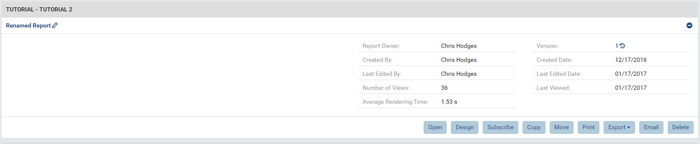

Adding To Your Report¶
In the last tutorial, we learned how to create a simple report with one report part, grant access to the report, and grant other users access to the report. The following tutorial will assume to have working knowledge of the platform from you experience with tutorial number one. It will guide you through editing a previously saved report, designing maintainable reports, and filtering data.
Opening Previously Saved Reports¶
Selecting A Report¶
In a report definition box, you will see the name of the report, its creator, and its last edit date.
To open a report, simply click on its name. If you wish to view more options concerning the report, click anywhere in the box that isn’t the text and your report definition box will expand.
Version Control¶
When the report definition box is expanded, you will see more metadata generated about the report as well as built-in version control.
Currently, our report has been saved twice and, therefore, there are two versions. If you click on the version number, you can see details about all versions.
If you wish to return to an archived version of a report, select the copy button in the Actions Column for the particular version you wish to return to. This will create a separate copy for you to edit.
Highlight over each button in the actions column to learn their purpose.
Note
- To maintain our versioning throughout all facets of the suite, we do not revert to previous versions.
- If you select “Delete” the working copy, all archived copies versions will be deleted as well.
Buttons in the Report Definition Box: Editing the Report List¶
Editing the report list can occur when you rename a report, copy a report, move a report, or delete a report.

Copy allows you to copy the definition of a report and place it in a new report. The new report does not have the archived versions of the report saved. Let’s copy this report into a new report called “Copied Report” and place it in the same category.

Move allows you to move your report into a new category. Move Copied Report to a subcategory of TUTORIAL called “Tutorial 2.”
Notice how the category “Tutorial” on the left panel now has a dropdown for sub-categories.
Once your report has been moved, we’re going to rename it. To rename it, click the Pencil icon beside the report name. Let’s rename it to “Renamed Report.”
Delete on the far left soft deletes the report on the database. Let’s delete Renamed Report.
Note
Notice how the category “Tutorial” on the left panel no longer has a dropdown for sub-categories. The sub-category still exists but, since we don’t have access to any reports that may be in it, it does not appear in our selection menu.
Report Services¶
Subscribe, Print, and Export are considered report services and will be covered in greater detail in later tutorials.
Accessing The Report¶
There are three ways to open a report (highlighted in red).
- If you click on the Report Name, the report will open in the Report Viewer.
- If you click on the Open button, the report will also open in the Report Viewer.
- If you click on the Design button, the report will open in the Report Designer.
- Open our report “Opening A Report” into the Report Viewer.
Visit the Report List for more information.
The Report Viewer¶
The Viewer¶
Our platform reuses elements to simplify the user experience.
In the middle of the page, you’ll see report that we designed in the last tutorial. On the left-hand side, you’ll see the list of report categories that were available to you in the Report List. If you wish to return to the Report List, simply choose a category on the left panel or click the Reports tab at the top of the page.
If you direct your attention to the top of the page, you’ll see a set of familiar Report Service buttons from the Report List. A button labeled “Update Result” is included to re-run the queries run in the report. This is particularly helpful when you add filters to a report or your underlying data has changed since the report was opened.
A dropdown box labeled “Preview Records” limits the query to a set value to increase performance. Generally, it’s a good practice to keep the number low at first to minimize strain on your reporting data but note that visual trends can significantly change when you change the reporting set size.
Note
If you wish to save a default preview size, you must set it and save it in the designer.
Opening Edit Mode from the Report Viewer¶
If you click on the edit button, you may see several options to modify your report.
{kind=link}
For now, let’s select Design to navigate to the Report Designer that we are familiar with from the first tutorial. Since we’re not editing our data sources, navigate to the Fields tab on the far left-hand panel to view our Report Body.
Designing Maintainable Reports¶
Copying And Renaming Report Parts¶
If you highlight over the top of our one report part, you’ll see our report part toolbar. Navigate to the right of this toolbar until you find the copy button and click it.
{kind=link}
Now, we have two identical report parts stack on top of each other. If you were to only have these two tiles in a report, you could probably differentiate between the two by saying “top” and “bottom.” When our reports become more complex, or we start to reference report parts from this report in other reports or dashboards, it suddenly becomes difficult to remember which tile was on the top and which one was on the bottom. Instead of spending hours enhancing our memory, let’s rename our tiles to have meaningful names to reference them.
To rename a report part, navigate to the report part toolbar. On the left-hand side of the toolbar you’ll see a name with a pencil beside it. Click on the pencil to rename your report part, click the check mark to confirm your name change. Let’s name the first tile “Top Bar Chart” and the second tile “Bottom Bar Chart.”
{kind=link}
Editing Copied Report Parts¶
Now that we’ve copied our report part, let’s flip the copy, Bottom Bar Chart, to Configuration Mode and make a few tweaks. Drag ShipAddress from the X-axis box to the Separators box. In the title and description boxes, add a meaningful description.
In this graph, we’re still seeing a sum of all Order IDs in each country but now we’ve separated them according to their Ship Address. If we drill down to the Ship City, we’ll see that the Separator is still applied.
If you return to Preview Mode, you’ll see that changes made to Bottom Bar Chart did not apply to Top Bar Chart.
Adding A Grid¶
‘’‘Let’s click in an empty area in the report body to add a Grid report part. In our platform, a Grid is a simple visualization of a table.
In the Columns box, add Country, OrderID, Quantity, and UnitPrice. In the separators, add ShippedDate.’‘’ This grid shows us information about orders for each ship date in our database.
At the bottom of the report part, you’ll see that grids paginate by default (this can be toggled off in the Report Part Properties). With the Preview Records setting set at 10, there doesn’t seem to be a use to this function. If we change the Preview Records setting to 100, however, we can see the true power of this option to keep a tidy report.
To view other tables in this Grid, use the arrow buttons in the bottom right-hand corner of the tile.
Report Responsiveness¶
Now that we have more than one tile in our report and our Preview Record set is larger, we can start to see the effects of the query strain on the report’s load time. Depending on your system’s resources, this latency could halt report creation altogether. Therefore, we recommend that you design with as small of a Preview Record set as possible, scale the Preview Record set when necessary for testing in the Designer, and, finally, set the Preview Record set to your desired size when design is complete. Likewise, we encourage you to group report parts in reports intentionally. For instance, 20 bar charts may use the same data sources but only 3 of the bar graphs require a data set larger than 1000. In this scenario, it would make sense to create two separate reports—one containing 17 bar charts and one containing 3 bar charts.
Filtering Data¶
Filtering is a neat way to focus in on your data set and enhance your query speed. The Filter Panel is located at the top of the middle section of the page.
Filtering on Country¶
To add a filter, simply drag a field from the Data Source Panel on the left and drop in onto the Filter Panel. Likewise, you can click the Add Filter button on the Filter Panel.
Let’s add Country as a filter. We want to filter our data so we only see information pertaining to USA.
{kind=link}
Once you add a filter, you’ll notice that the right-hand panel has switched to the Filter Properties tab. If you wish to change which filter’s properties you’re changing, click on a different filter in the Filter Panel.
On the right-hand panel, in the properties tab, navigate to the Filter Operator. Choose String in the top drop down, like in the second dropdown, and type USA in the text field that appears.
{kind=link}
Press the Update Result button at the top of the page to rerun the query.
{kind=link}
Once the result is updated, you’ll see that our visualizations only show information about the Country USA.
Filtering On Country: A Better Way¶
What if we wanted to see data for the country Lichtenstein? The country is small and unlikely to be in our data. To check, we could type Lichtenstein in our current filter and, granting that we spell the country’s name correctly, come upon an empty report but how could we be certain that the Country is not in our data?
Let’s modify our filter. In the top dropdown of the Filter Operator, select Equivalence. In the second dropdown, select Equals (Popup). Once you’ve selected these options, a button will appear beside the “Equals (Popup)” box that will open a popup menu containing the names of all of the countries. Let’s select Norway, Canada, and Sweden and Update our results.
Compounding Filters¶
Our tool allows us to add multiple filters for more unique results. To add another filter, simply drop it into the Filter Panel. Let’s add Quantity from the Order Details table to our Filter Panel.
Note
The order of filters matters. In general, try to add the broadest filter first and narrow down in proceeding filters.
In the Filter Operator section of the Filter Properties, select Comparison, Is Less Than, and type 70 in the final text field. Once we update the result, we’ll see a drastic change in our visualizations!
Modifying Filter Logic¶
By default, Filters are compounded together to define a more refined result. In our scenario, we’re first filtering to view the Countries of Canada, Norway, and Sweden. Within these countries, we filtering on Order Quantities less than 70. Therefore, we’re looking to see that the Country matches our definition AND our quantity meets our definition.
Suppose we want to see all the entries for Canada, Norway, and Sweden but we also want to see every entry (for any country) that has a quantity less than 60. We can achieve this by using an OR operator. In the Filter Panel, enter the text box labeled Filter Logic and type 1 OR 2. 1 is referring to your first filter, Country, and 2 is referring to your second filter, Quantity.
If you update your result, you’ll notice that the first filter seems to have little to no effect. This is because the second filter is so broad that every country appeared in our result set. To combat this, let’s try a different quantity to filter on. In the Filter Operator, change your comparison from Is Less Than to Is Greater than, change your value from 70 to 500, and update your result.
Final Thoughts¶
This tutorial taught us how to navigate through the Report List, how to select a report to view in the Report Viewer, and how to modify a previously created report in the Report Designer. Our experience gained from the first tutorial alongside our knowledge earned in this tutorial have given us the skills to create an intuitive report with the ability to filter data according to record size and field properties. In our next tutorial, we will learn how to utilize our filters in Report Viewer and how to stylize our reports to create our desired look and feel.